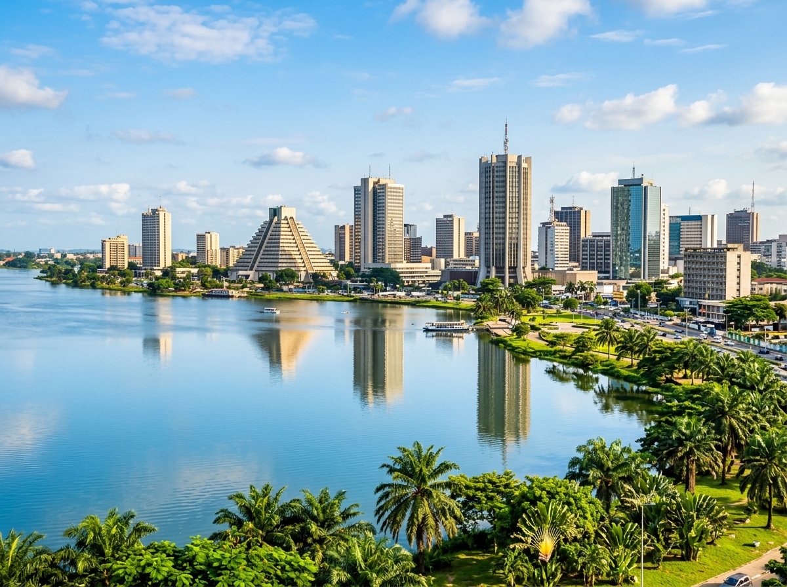
Hier stehen die wichtigsten Daten zu deinem Land. In der App baust du daraus deinen eigenen Steckbrief.
| Hauptstadt | Yamoussoukro ist die offizielle Hauptstadt. Die größte Stadt ist aber Abidjan, dort wohnen die meisten Menschen. |
| Kontinent | Afrika |
| Sprache | Französisch, dazu über 60 weitere Sprachen |
| Währung | CFA-Franc |
| Einwohner | über 30 Millionen Menschen |
| Fläche | etwa 320.000 km², ein bisschen kleiner als Deutschland |
| Großes Gewässer | der Atlantik im Süden, dazu der Fluss Bandama |
| Nachbarländer | Guinea, Liberia, Mali, Burkina Faso und Ghana |
In der Elfenbeinküste gibt es viele besondere Orte. Diese vier solltest du kennen.
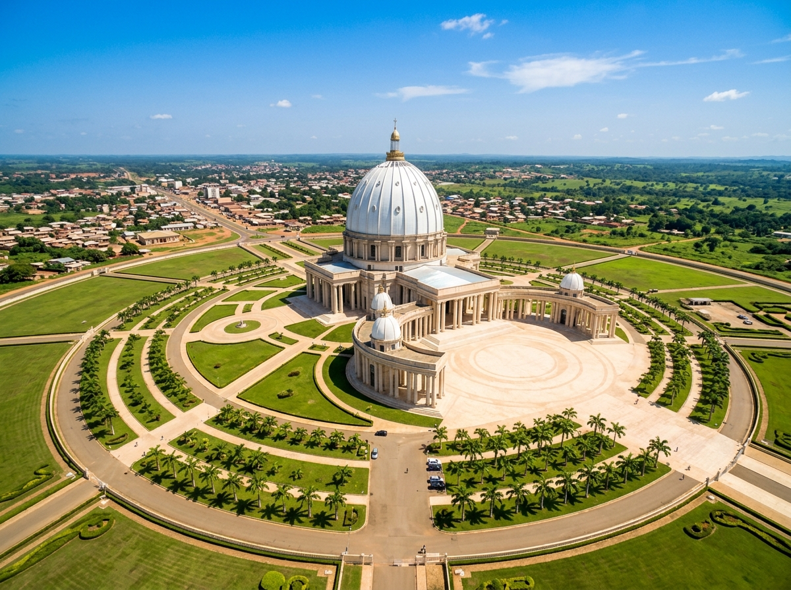
Basilika Notre-Dame de la PaixIn Yamoussoukro steht eine riesige Kirche. Sie ist eine der größten Kirchen der ganzen Welt. Das Gebäude ist höher als der Petersdom in Rom. Es hat eine große runde Kuppel und sieht von weitem prächtig aus.
Grüne Wörter für die Appriesige KircheYamoussoukroeine der größten der Weltgroße Kuppelhöher als der Petersdom
Nationalpark TaïDer Taï-Nationalpark ist einer der letzten großen Regenwälder in Westafrika. Hier ist es sehr feucht und grün. Im dichten Wald leben Schimpansen, viele Vögel und seltene Pflanzen. Der Park ist geschützt, damit alles so bleibt.
Grüne Wörter für die AppRegenwaldWestafrikafeucht und grünSchimpansengeschützt
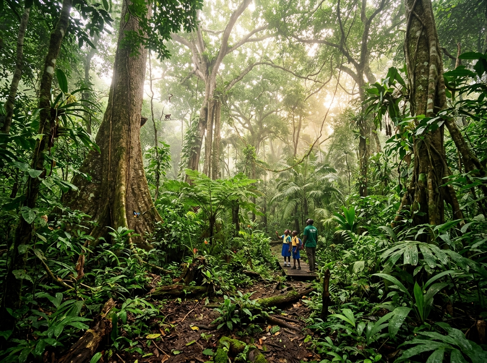
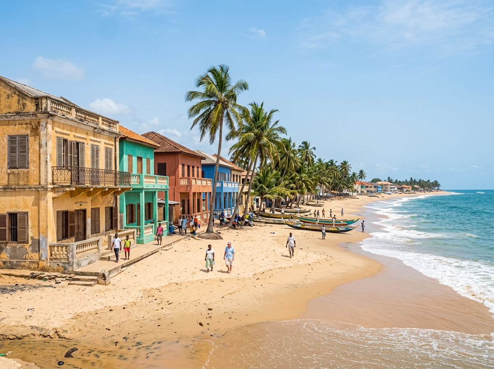
Strand von Grand-BassamGrand-Bassam ist eine alte Stadt direkt am Meer. Früher war sie sogar die Hauptstadt. Dort stehen bunte, alte Häuser. Der lange Sandstrand am Atlantik macht den Ort besonders.
Grüne Wörter für die Appam Meeralte Stadtbunte Häuserlanger SandstrandAtlantik
Comoé-NationalparkDer Comoé-Nationalpark ist ein sehr großer Park im Norden des Landes. Hier gibt es weite Graslandschaften und kleine Wälder. Viele Tiere leben hier, zum Beispiel Elefanten und Affen. Ein Fluss zieht sich mitten durch den Park.
Grüne Wörter für die Appim NordenGraslandElefantenAffenFluss
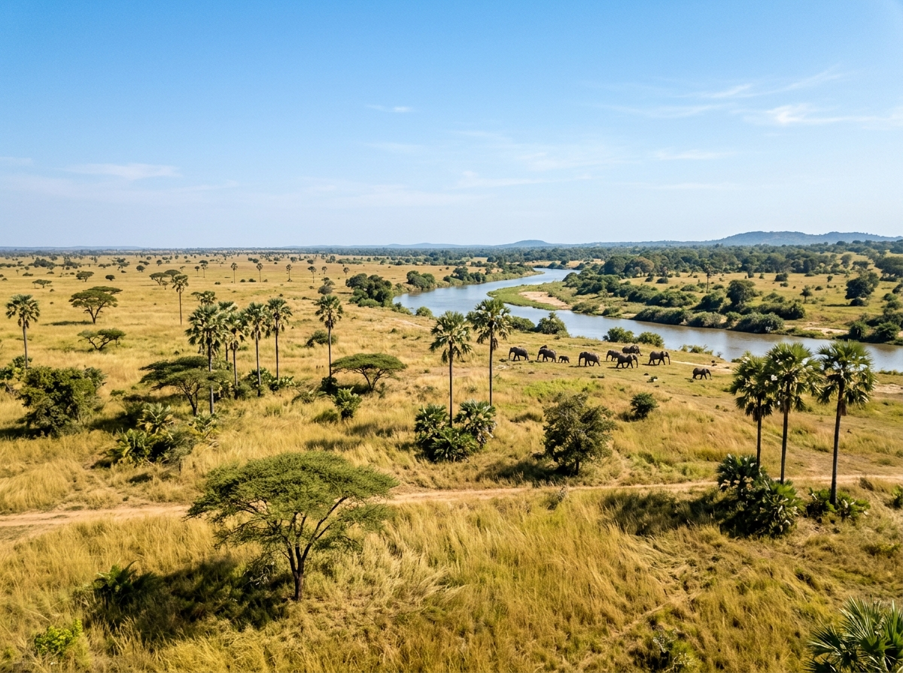
Im Regenwald und an den Flüssen der Elfenbeinküste leben Tiere, die du bei uns nicht in der Natur findest.
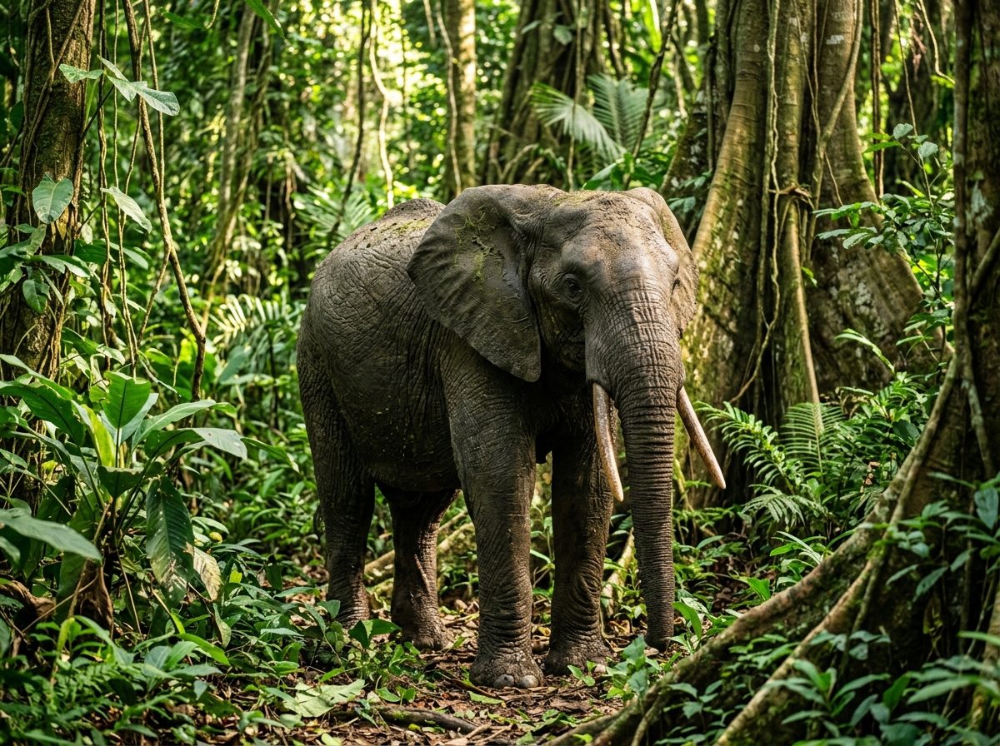
WaldelefantDer Waldelefant ist etwas kleiner als andere Elefanten. Er lebt im dichten Regenwald. Das Land hat seinen Namen von diesen Tieren, denn ihre Stoßzähne sind aus Elfenbein. Heute gibt es nur noch wenige davon.
Grüne Wörter für die Appkleiner ElefantRegenwaldStoßzähneElfenbeinselten
SchimpanseDer Schimpanse ist ein kluger Affe. Er lebt in den Regenwäldern der Elfenbeinküste. Schimpansen benutzen sogar Werkzeuge, zum Beispiel Stöcke und Steine. Sie leben zusammen in Gruppen.
Grüne Wörter für die Appkluger AffeRegenwaldWerkzeugeStöcke und SteineGruppen
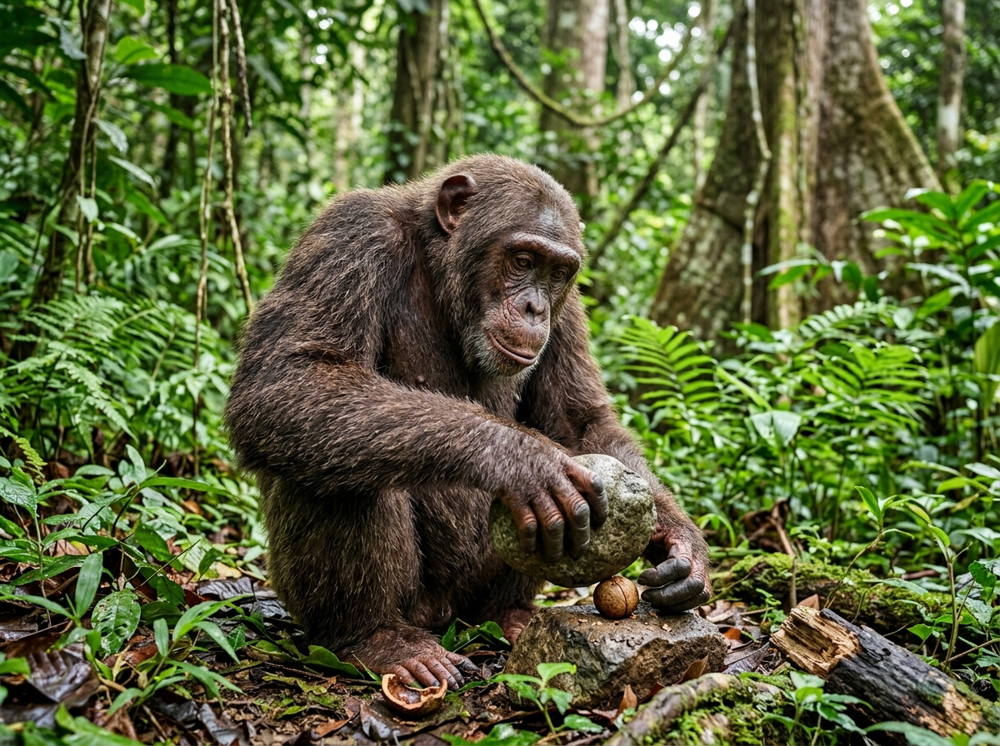
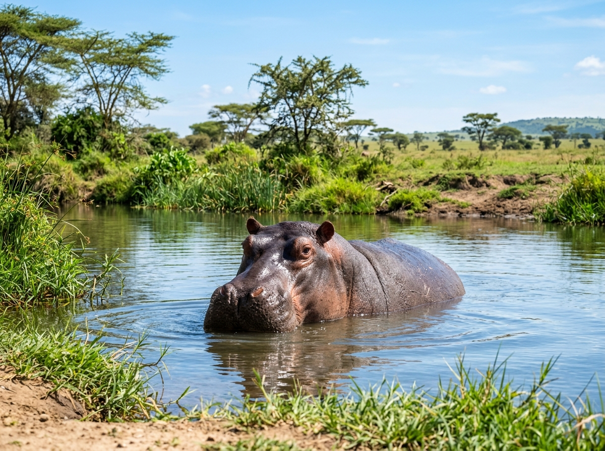
FlusspferdDas Flusspferd ist ein großes, schweres Tier. Es lebt in Flüssen und Seen und liegt gern den ganzen Tag im Wasser. Erst am Abend kommt es heraus, um Gras zu fressen. Trotz seiner Größe kann es gut schwimmen.
Grüne Wörter für die Appgroß und schwerim WasserFlüsse und Seenfrisst Grasschwimmt gut
In der App kannst du beim Essen das Foto nehmen oder dein Gericht selbst malen.
AttiékéAttiéké ist ein Alltagsgericht aus der Knolle Maniok. Der Maniok wird gerieben und gedämpft. Am Ende sieht es aus wie Couscous, also wie kleine helle Körner. Man isst es gern zu Fisch oder Fleisch.
Grüne Wörter für die Appaus Maniokgeriebengedämpftwie Couscouszu Fisch
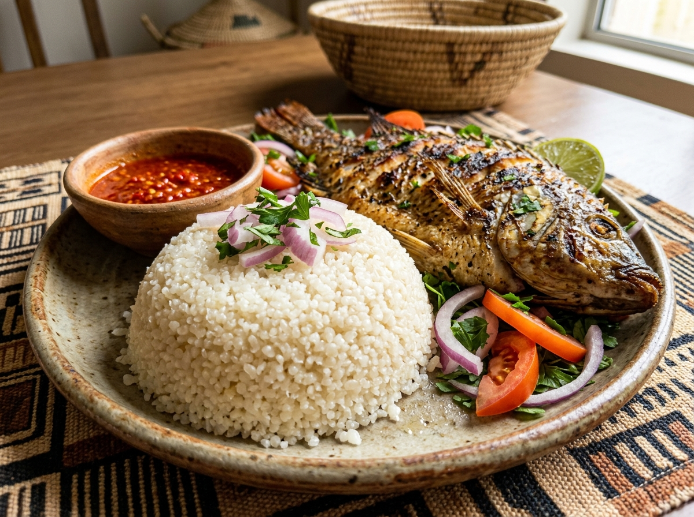
KedjenouKedjenou ist ein Huhn mit Gemüse. Es wird in einem geschlossenen Tontopf ganz langsam gegart. Dabei köchelt alles auf kleiner Flamme. So wird das Fleisch ganz weich und schmeckt kräftig.
Grüne Wörter für die AppHuhnmit GemüseTontopflangsam gegartweich
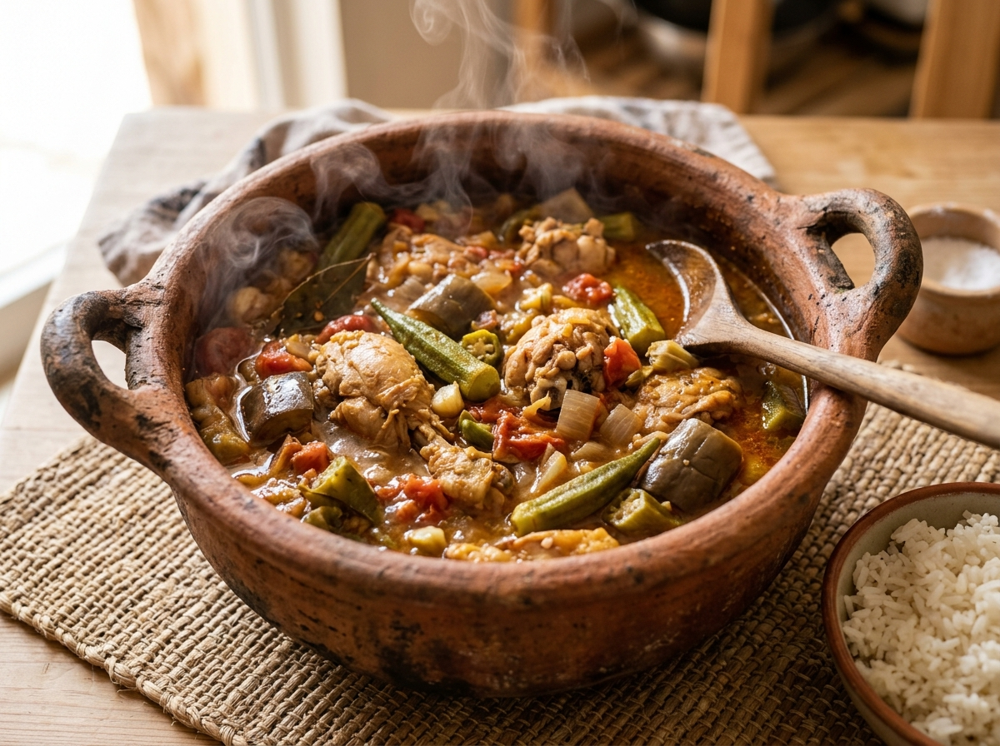
FoutouFoutou ist ein zäher Teig aus gestampftem Maniok oder Kochbananen. Man formt daraus kleine Bällchen mit der Hand. Die Bällchen taucht man in eine würzige Suppe. Die Elfenbeinküste ist außerdem eines der größten Kakao-Länder der Welt, hier wächst sehr viel Kakao für Schokolade.
Grüne Wörter für die Appzäher TeigManiokKochbananenBällchenwürzige Suppe
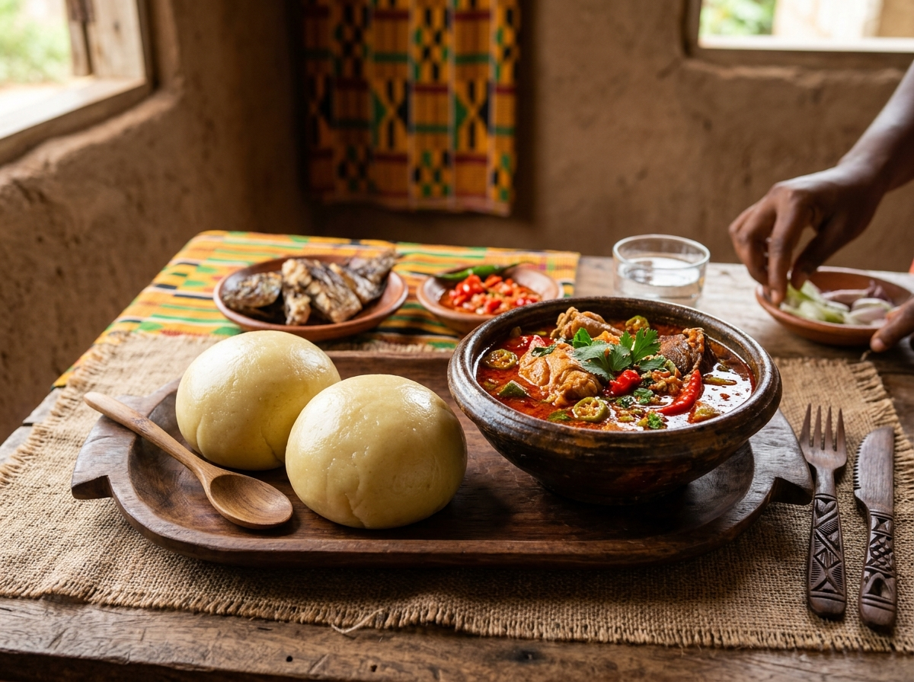
⚽ Gut zu wissen
Die Fußball-Nationalmannschaft der Elfenbeinküste heißt „Les Éléphants", auf Deutsch „die Elefanten". Sie spielt im orangefarbenen Trikot. 2024 hat das Land den Afrika-Cup gewonnen, und zwar im eigenen Land. Bei der WM 2026 ist die Elfenbeinküste dabei, das Team hat sich ohne eine Niederlage qualifiziert. Es spielt in der Gruppe E zusammen mit Deutschland.
Grüne Wörter für die Appdie Elefantenorange TrikotAfrika-Cup 2024WM 2026Gruppe E
🌟 Profi-Wissen
Didier Drogba war der bekannteste Fußballer aus der Elfenbeinküste. Er spielte beim FC Chelsea in England und erzielte viele Tore. Drogba war so bekannt und beliebt, dass sein Name sogar einen Waffenstillstand in einem Bürgerkrieg bewirkte. Alle Seiten legten die Waffen nieder, um ein WM-Qualifikationsspiel zu sehen.
Grüne Wörter für die AppDidier DrogbaFC ChelseaNationalheldFrieden durch FußballStürmerlegende
Schule in der ElfenbeinküsteDie Kinder in der Elfenbeinküste lernen in der Schule auf Französisch. Viele sprechen zu Hause noch eine andere Sprache. In den Klassen sitzen oft sehr viele Kinder zusammen. Nicht alle Kinder können jeden Tag zur Schule gehen, weil sie zu Hause mithelfen.
Grüne Wörter für die AppFranzösischgroße Klassenzwei Sprachenmithelfennicht alle gehen
Kakao-Ernte und MarktViele Familien arbeiten auf Feldern, wo Kakao wächst. Aus Kakao wird später Schokolade gemacht. Die Bohnen werden in der Sonne getrocknet. Auf dem Markt kaufen die Familien dann frisches Obst, Gemüse und Fisch ein.
Grüne Wörter für die AppKakaoSchokoladeBohnen trocknenMarktObst und Fisch
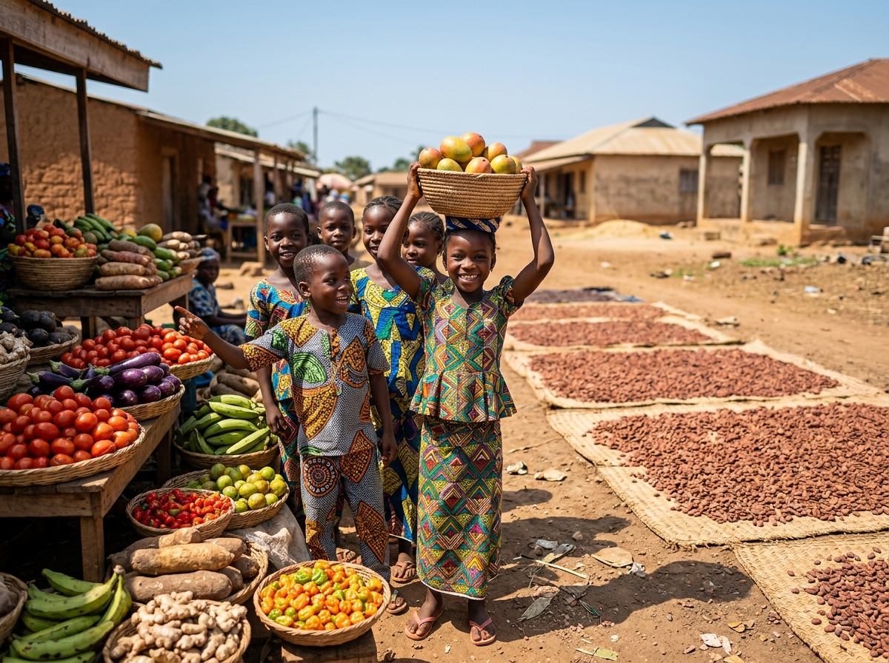